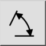
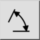
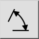
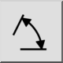
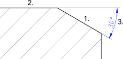

Winkel
Werkzeugleiste / Symbol:
 

Menü: Bemassung > Winkel
Tastenkürzel: D, N
Kommandos: dimangular | dn
Werkzeugleiste / Symbol:
 

Menü: Bemassung > Winkel
Tastenkürzel: D, N
Kommandos: dimangular | dn
Erstellt Bemassungen für Winkel zwischen zwei Referenzlinien:
